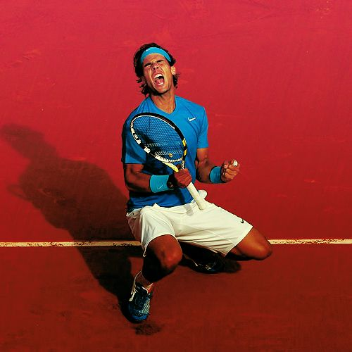

Hawk-Eye has been an integral part of tennis since 2002 and continues to deliver innovative solutions for federations, tournaments, broadcasters, sponsors and academies that truly enhance the game for players and fans.
Hawkeye is used to detect whether a ball has gone out of play or not, the margins are usually so narrow as a ball can be even if 1% of the ball touches the line, this is why hawkeye is needed because a human eye is not capable of properly detecting this, the technology is not used with instant where a ball has gone out, as umpires still decide the calls, but if a player feels as if the ball was in they can review the decision using hawkeye and they have 3 chances to use it, if the decision is wrong they keep their chances but if they appeal and the decision was correct then the chance goes
There has been many instances where goals have been given which never crossed the line, and the same goes for goals which was given but never crossed the line, so the technology is great for the game of football as it provides accuracy, and no unfair advantages for teams that are punished
